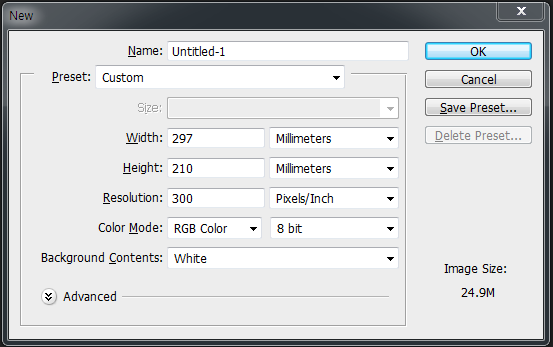

설치 관련
[사용하는 브라우저들] : 호환성 테스트 해봐야함
브라켓 다운로드 : Brackets
파일질라 다운로드 : FileZilla
Github 다운로드 : Desktop.github
->Github 홈페이지에서 Repositories 1개만들기 -> Github-desktop 열리면 위치 설정하기
서브라임 다운로드 : sublimetext
서브라임 확장프로그램 설치 : packagecontrol
->(View)show console에 복사 -> (Preferences)package control -> install package -> Emmet / SideBarEnhancements / SFTP / BracketHighlighter / CSScomb /Material Theme 설치
VS code 다운로드 : visualstudio
---> 확장프로그램 : Beautify, Live Server, Bracket Pair Colorizer(괄호색 맞춰줌), ftp-simple (ftp연결)
브라켓 확장기능 추가
- Beautify: 코드 정렬
- Indent Guides: 라인 정렬 보여주기
- Emmet: html/css 단축키
- Custom work: 탭 메뉴 설정
브라켓 단축키
- alt + F3 : 전부 찾은 후 선택
Emmet 기능
- Emmet 단축키 모음 Emmet
- ! + tab : html5 기본적인 구조
- ctrl + / : 주석만들기
- w100p + tab -> width: 100%
- ul>li*4 + tab : ul의 li목록이 4개 만들어짐
- ctrl + space : 자동완성 켜기
- #cont$*7 -> $자리에 숫자가 1~7까지들어감
$$가 되면 01~07로 들어감 - tab <-> shift+tab
- .head +tab -> <div class="head"> </div>
VS code 단축키
- 단축키 모음 visualstudio
- alt + shift + f : 라인 정리
- 줄 끝에서 ctrl + c -> ctrl + v : 줄복사
- ctrl + h : 전체에서 찾아서 바꾸기
- alt+shift+방향키 : 줄복사
- alt+방향키 : 위아래로 이동
디자인 관련된 사이트
퍼블리셔 관련된 사이트
컬러(Color) 관련된 사이트
- Color Palette Materializecss
- WitchingHour WitchingHour
- lolcolors lolcolors
- 백그라운드 컬러 (그라데이션) webgradients
- 색의 대비를 보기 쉬운 vanschneider
- 색 구분 연습 color.method
- colors colors
- 그라데이션 만들기 colinkeany
- 그라데이션 만들기 cssgradient
- adobe cc 팔레트 adobe
코딩 관련된 사이트
>>>자바 관련된 사이트
- jquery 사이트 jquery
- jquery api보기 api
- 쉽게보는 jquery api 사이트 oscarotero
- JavaScript 사이트 JavaScript
- jquery : slick slick
- jquery : lightGallery lightGallery
- jquery : swiper swiper
>>>SCSS
- SCSS 에서 CSS로 변환하기(Compile) sassmeister
폰트 / 웹 아이콘 관련된 사이트
- 무료한글폰트 눈누폰트
- 웹폰트 설정 구글폰트
- 구글 폰트 구글폰트
- 아이콘 웹 폰트 대표적인 사이트 fontawesome 4.7ver
- 아이콘 웹 폰트 pixeden
- 아이콘 웹 폰트 fontello
이미지 / 아이콘 관련된 사이트
- unsplash Unsplash / source
- thepixup thepixup
- pixabay pixabay
- 비디오 pexels
- 벡터이미지/아이콘 freepik
- material 아이콘 material
- icons8 아이콘 icons8
Mockup 관련된 사이트
- Mockup Mockupworld
- Devices facebook.design
- dunnnk dunnnk
도움될만한 사이트
- 쌤 유투브 유투브
- Entity code ntt
- 디자인 리소스 공유 freebiesbug
- 다른 브라우저에서 사용가능한지 확인하는 사이트 caniuse
- 다양한 디자인 예시 plus-ex
- 코남 유투브
- J.Koba 유투브
- 마우스 오버 효과 모음 littlesnippets
- Shapes CSS 효과들 theshapes
포트폴리오에 도움될만한 사이트
- 포트폴리오 볼 만한 siteinspire
- 포트폴리오 볼 만한 2 cssdesignawards
- 사람들의 포트폴리오 모음 notefolio
웹 표준 사이트

[웹 콘텐츠 제작기법]
기타 사이트
- trend Trend
- Marketshare Marketshare
- Grid 사이트 grid
- material 표준사이트 material
- 프로토타입 만들 때 사용할 사이트 sketchize
- 모바일화면 확인해볼 수 있는 사이트 다음 트로이
- 오픈소스 공유 jsdelivr
포토샵 단축키
- GuideGuide --> 그리드 만드는 프로그램 3.2.3ver
- 단축키 사이트(여러가지 프로그램) 클릭
- 새로만들기: Ctrl+N
- 확대/축소: Ctrl+ -/+
- 전경색 채우기: Ctrl+delete
- 배경색 채우기: Art+delete
- 가이드라인 없애기: Crtl+;
- 캔버스 움직이기: Space bar
- 룰러 만들기: Ctrl+R
- 자르기: C
- 웹용으로 저장하기: Ctrl+Alt+Shift+S
- 다른이름으로 저장하기: Ctrl+Shift+S
- 사진변환: Ctrl+T(shift+변환해야 화질이안깨짐)
- 레이어 그룹화: Ctrl+G
- 캔버스 사이즈 변환: Ctrl+Alt+C
- 레이어선택 (레이어 마스크 만들때): Ctrl+layer선택
- 레이어 복사: Ctrl+J
- 다 합쳐서 비트맵화: Ctrl+E

[포토샵에서 a4사이즈 설정]
일러스트 단축키
- 모눈종이 : Ctrl + '
- 줄자 만들기 : Ctrl + R
- 이미지고정 : Ctrl+2
앱 확장프로그램
- Full page screen capture: 인터넷 풀캡쳐
- ColorZilla: 컬러 스포이드
- Wed developer
코디이이잉
테이블기본세트<div class="table-responsive">
<table class="table table-bordered table-striped table-hover">
</table>
</div>
코드박스 기본세트
<pre class="line-numbers language-markup"><code></code></pre>
2019.10.15
'닷홈'에 가입해서 무료호스팅신청- 도메인주소는 dldkfka331.dothome.co.kr
파일질라 설치후 연결함 -> 왼쪽에서 오른쪽으로 옮겨야함
그러면 어디서든 내 도메인에 들어가면 내가 올린것을 볼수있음
study라는 폴더추가 후 index.html 추가해서 박스하나 더만들었음
assets에 있는 피자아이콘을 사용해서 박스이미지를 변경함
나와 관련된 사진들을 같은사이즈로 변경하여 추가함
포토샵에서 ctrl+alt+shift+s는 웹용으로 저장, 단축키를 많이이용할것
2019.10.16
a링크에 #대신 원하는 주소를(ex유투브) 입력하면 클릭할때 연결이됨
<p class="well"> 박스안에 글씨써짐 well대신 다른걸로도 변경가능
태그는 150/css는200개 넘게있음
ul은 목록(한칸정도 띄우는느낌?tab느낌) li는 목록생성(점찍힘)
ctrl+d는 줄복사, ctrl+/는 전체주석표시
< >는 읽을수 없는것을 읽게함(<를 쓰게되면 태그로인식하는데 그걸쓸수있게함)
html로 전체틀을잡고 css로 디자인한다는 느낌
../로 폴더를올라가서 assets에 있는 img폴더의 이미지를 불러올수있음
#은 기본값
2019.10.17
!+tab 은 제일위에 기본태그나옴 (head & body)
div태그->박스를 만듬: html로 골격을 만든 것
Ctrl+Space bar는 자동완성이 뜨게함
class일땐 . / id 일땐 #
포토샵에서 스마트오브젝트를 이용해서 mockup을 만듬
확장자는 소문자로 하는게 에러날 확률이 없음
이미지 설정할때 alt뒤의값은 이미지가 안나올때 이미지 설명?이름? 같은것을 설정할 수 있음
2019.10.18
float을 쓰면 주위의 height값이 사라지는 버그가있음-> clear: both를 사용해서 버그를 막을수있음
css는 ";"이 마지막에 붙는것이 보통임
/* */->css에서의 주석표시
2019.10.21
w100p + tab -> width: 100%
.head +tab -> <div class="head"> </div>
#head +tab -> <div id="head"> </div>
width 기본값은 100%이고, 밑에class에 height값이 있으면 위의 id값에 동일하게 적용되므로 안적어도 된다.
ol>li는 순서가 있는 목록이라 숫자가 옆에붙는다.
정보구조 설계가 필요한 사이트는 메뉴가 많은 사이트!(쇼핑몰같은것)
2019.10.22
<br>는 줄바꿈태그
inherit; 는 상속받는태그. 만약 class가 id밑에있고, class에 inherit를 사용하면 id의 정보를 class에 상속받는다.
id와 class는 이름이 똑같아도 상관없음
<pre class="line-numbers language-markup"><code></code></pre> --> 줄바꿈, 여백, 간격등을 인식해서 똑같이나옴.
앞에 띄어쓰기까지 인식하기 때문에 맨앞줄에 맞춰줘야 함
2019.10.23
css에 reset(초기화를위해)과 stlye css설정만듬!!
col-md-12 -> 그리드(grid)를 12칸 차지한다는 뜻
링크 연동을했으면 확인을 해봐야 함 -> 페이지 소스보기에서 검사
스타일의 background로 배경관련한 것들을 바꿀수있고, background-color는 색 관련해서만 바꿀수가 있다.
위에있는 선언 -> 아래쪽에있는 선언-> 링크밖? 이 우선순위가 높아짐
2019.10.24
a태그에서 rel은 관계성이고, herf에 id값을 넣으면 클릭했을때 이동함(class는안됨)
폰트 속성쓸 때 'Malgun Gothic' 빈칸이 있어서 ''붙이고, '맑은 고딕'은 한글이라서 ''붙임
주소가 구체적인것이 더 우선순위에 있다.
.header .header-menu {} -> header안에있는 header-menu라는 뜻, 한눈에 봐도 알아볼수있게 정리한 것 뿐임
x,y 위치값은 왼쪽모서리! 만든 박스도 왼쪽모서리!
border(테두리): 1px solid #fff; -> width: 1px, style: solid, color: #fff 라는 뜻
display: block; -> 블록구조가 아닌 다른구조를 블록구조로바꿈
display: inline-block; -> 인라인속성이있는 블록구조로바꿈
2019.10.25
&+amp; -> &
a링크에 target="_blank"를 넣으면 새로운페이지로 열림
a.icon1는 같은이름(a태그이름이 icon1)이기 때문에 붙여서 쓰고, .header-icon a는 헤더아이콘과 a가 부모자식사이라서 띄워서씀
background-position: 0 -120px; -< x값은 그대로이고 y는 위로 120px만큼 올린다(120px 만큼 밑에있는 사진이 뜸)
2019.10.28
.nav > div {} -> 첫번째에 있는 div박스만해당
.nav > div:last-child {} -> 마지막 자식을 지정함
.nav > div:nth-child(2) -> 2번째 자식을 지정함
이미지 슬라이드를 만들수 있다면 다른것은 쉽다!
2019.10.29
웹사이트에서 게시글 안의내용은 table을 사용하지만 메인소개에서는 ul>li사용
title="더보기" 속성은 접근성을 위한것, 마우스를 올리면 더보기라는 글자가 나옴
[포토샵] 레이어 마스크사용법을 배움
[포토샵] M은 marquee tool 단축키고 V는 movetool 단축키!!! 단축키사용해서 레이어 마스크를 만들때 글씨를 빨리 선택해서 구분가능
2019.10.30
backgrund-position 기준값은 x=0, y=0
0 9px; 이면 x=0, y=9px 위치
margin-right: -1px; margin-bottom: -1px; -> border끼리 겹쳐서 2줄처럼 보이면 한줄처럼 바꿀 수 있다.
2019.10.31
<form action="post" id="losin_form" name="login_form"></form>로그인기본설정
2019.11.01
가상 엘리먼트는 실제 태그가 존재하지 않지만 (html에 존재하지않음) css로 가상태그를 만듬
원래는 '::' 2개를 쓰지만 CSS3을 지원하지 않는 IE8은 ‘:’ 만 사용가능함
2019.11.04
서브라임 설치해서 사용법/ 서버에 연결하는거 배움
[서브라임]"upload_on_save": true, 으로 설정하면 저장하면 자동으로 업로드됨
2019.11.05
미디어 쿼리에서 float: left;가 있어도 width/height 값 을 바꾸면 됨
[서브라임] 줄복사 ctrl+shift+D
width값은 padding + margin + border이기 때문에 잘 더해서 정해야 함
2019.11.06
a태그에 색을 먹이려면 a태그 에 색을 넣어야햄
2019.11.07
box-shadow : 8px 8px 0px 5px rgba(0,0,0,.8) : x축 y축 blur spread 색상 설정
1em : (상대단위) 부모의 1배정도, 1rem : (상대단위) 루트폴더의 1배정도
transition 효과는 원본에다가 주는 것이 좋당
효과를 하나만줄때는 transition을 사용하고 여러개면 animation 사용
animation을 쓸때는 @keyframes 으로 설정을 해줘야함
2019.11.08
border-radius 배움
border-radius: 10px/ 55px; : 위에 x축만큼10px /y축으로 55px 4군데다동일
2019.11.11
▼ : border-top은 주고 right/left값을 투명하게 만들면 이런모양이 생김
2019.11.12
body 맨밑에 script를 넣는게 좋음
[jquery] $("#nav") = #nav
[jquery] function은 어떤 동작이 일어나게 하는 함수
[jquery] $(".btn").click(function(){}); btn 버튼을 클릭했을 때 어떤 동작이 일어남
[jquery] toggle : 사라지고 나타나는 효과를 줌
[jquery] api에서 두개의 단어가 합쳐지면 뒤의단어는 대문자로 시작해야 함
[jquery] 주석표시는 // 이걸로사용
v2 클래스는 version2라는 뜻 = 기존값은 살아있다
2019.11.14
Pixel-Ratio : 4 는 해상도 4배?
[일러스트] expand appearance 성질없애기! + pathfinder의 unit 하고 live painter 효과줌
2019.11.15
[오답노트]
- 이미지맵을 사용하여 이미지로 제공하는 경우 개별 area요소와, 전체 이미지에도 alt요소로 대체 텍스트를 제공하여야 함!
- 이미지를 한번에 만드는 이미지 스프라이트 기법은 용량이 덜 나간다!
- Screen Out : 대체 텍스트가 아닌 접근성을 위한 숨김 텍스트를 제공할 때 사용함!
- WA IR : 의미 있는 이미지의 대체 텍스트로, 이미지를 off시에도 대체 텍스트를 보여주고자 할 때
- element >element 태그는 모든자식이 아니고 제일 첫번째 자식임
- background-color : rgba (0,0,0,0.7) 에서 a가 없는 rgb는 투명도를 설정할 수 없음
.video {width: 100%; padding-bottom: 56.25%;} 이런식으로 넣으면 동영상을 반응형으로 넣음
2019.11.18
변수는 데이터가 변하는 수 let
상수는 데이터가 변하지않는 수 const
2019.11.20
aria-hidden="true" -> 접근성에서 필요없을 때
left: calc(100% - 70px); 왼쪽으로 100%에서 70px정도 빼버린다 -> 반응형에 사용하기 좋음
2019.11.21
display: flex; 자식들을 컨트롤할수있음
justify-content: center; 양 옆의 가운데
align-items: center; 위아래의 중간 : 이렇게하면 가운데로 올수있당
2019.11.22
role="navigation" 은 접근성을 위해서 붙여줌
2019.11.25
3vmin 으로 설정하면 지정한크기(3vh/3vw) 이후로 안커지지만 줄어들긴함 -> 반응형 할 때 이용
2019.11.26
:nth-of-type() 자식들중에 한타입만 선택
2019.12.02
[오답노트]
- 정지기능 제공 : 자동으로 변경되는 콘텐츠는 움직임을 제어할 수 있어야 함, 일시 정지 기능 등 시간을 제어할 수 있는 기능 제공
- 사용자 요구에 따른 실행 검사 : 사용자가 의도하지 않은 기능(새 창, 초점 변화 등)은 실행되지 않아야 한다.
- 실행은 onclick, enter 로 가능하게 적용한다.
- 새 창 및 팝업창의 경우 a 요소에 target="_blank" 로 지정한다.
- 웹 사이트 로딩시 자동으로 실행되는 콘텐츠(팝업창, 레이어 팝업, 배경음 포함) 을 사용하지 않는다.
- !!! 오류 정정을 위해 자동으로 초점 변화가 발생하는 경우는 괜찮음
- 키보드 사용 보장 : 모든 기능은 키보드만으로도 사용할 수 있어야 한다.
- 키보드와 마우스 이벤트 핸들러 제공 : 마우스로 접근 가능한 기능이라면, 키보드로 접근 가능해야 함
- 마우스 드래그와 드롭 기능에서의 키보드 이용 보장 : 마우스 드래그 및 드롭 방법만으로 구현하지 않고 체크상자, 선택 버튼기능등을 제공함으로써 키보드 사용이 보장될 수 있도록 해야 함
- 부가 애플리케이션(Flash, 실버라이트 등) 제공시 키보드 이용이 가능해야 함
- !!! 내부에 포커스를 가지는 플래시 오브젝트(메뉴, 플레이어, 배너 등)는 wmode 속성값을 window로 지정 (transparent 또는 opaque는 안됨)
- !!! 마우스의 끌어다 놓기 기능도 키보드로 구현이 가능하도록 만들어야함
- !!! 키보드로 접근이 가능한 태그 : a, button, details, iframe, input, keygen, label, select, textarea 등
- !!! img 태그는 usemap 속성이 있으면 키보드로 접근이 가능함
- !!! 콘텐츠 실행 방법을 단축키로 제공한 경우는 괜찮음
- 텍스트 콘텐츠 명도 대비 : 텍스트 컨텐츠와 배경 간의 명도 대비는 4.5대 1 이상이어야 한다.
- 24px 이상 또는 굵은 18px 이상시 명도 대비 3:1 이상 허용
2019.12.03
" " 안에는 ' ' 써야함
"100" : 문자 100
100 : 숫자 100
console.log ("변수 x의 값은: " + x); 문자""와 x 값을 같이 나오게 하고싶을때에는 + 사용함
2019.12.05
prompt를 이용해서 사용자에게 받으면 문자로 인식함 (숫자도 문자로인식해서 연산이 되지 않는다ㅠㅗㅠ)
--border 변수선언한다는뜻(css) / 사용할때는 var(--border) 사용
background: #009dff url(../img/connect_bg_01.png) 0 0 /1400px; 백그라운드 속성 한번에 쓰기!
2019.12.09
transition 을 원본에게 주면 들어갈때 / 움직이는거에 주면 나갈때의 움직임을 조절
2019.12.13
[Github]사이트에서 new만듬 -> 그러면 데스크에 새로생김 -> 데스크에서 clon repository해서 폴더지정하면 폴더가 생기는데 그 폴더에 내용물을 옮김 -> 밑에 제목쓰고 commit to master 눌러서 서버에올림 -> 사이트에서 세팅들어가서 소스를 none에서 마스터브런치로 바꾸면 사이트연결가능
2019.12.17
[jquery] $("#list2 li").css("color","red"); -> id값 list2의 li에 css color:red 추가하는 방법